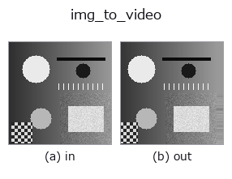
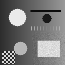

bridge op• データ種: image → video
• 呼び出し: fullseye.apply(img, "img_to_video", a=0.5, b=0.5) (2-D は 1 画像 + 2 スカラつまみ a,b∈[0,1] のモデル)

*図は合成の入力 128×128 で実際に走らせた出力。左が入力、右が出力。点群は上から見た散布(明るさ = z)、1-D 列は折れ線、体積は z 方向の最大値投影、動画は中央フレーム、複素画像は振幅、絵にならない返り値は値そのもの。*
つまみ a を振る(0.1 / 0.5 / 0.9、もう一方は既定):
▸ img_to_video: knob a sweep (docs site)
つまみ b を振る(0.1 / 0.5 / 0.9、もう一方は既定):
▸ img_to_video: knob b sweep (docs site)
別の画像でも(合成シーン / 写真 / 硬貨。上段が入力、下段がその出力。つまみは既定):
▸ img_to_video: other inputs (docs site)
*4 列目はカラー (H,W,3) の入力。この op は色を跨がずに扱える(色チャネルを 3 本目の空間軸として畳み込まない)。*
動き(GIF: フレーム / 視点 / スライスを順に。静止の図が完成形で、GIF は補助):

画像を一定速度で平行移動させた T フレームの動画 (T,H,W) にする。
フレーム `t は入力を (dy, dx) = t * step * (sin θ, cos θ)` だけ動かしたもの
(`scipy.ndimage.shift`、線形補間、縁は最近傍で延長)。**変位が閉形式で
分かる**ので、動画の族(`tb_frame_difference_causal / tb_motion_energy_image` /
`tb_background_subtraction_window` …)の検算に使える。
• `a → 1 フレームあたりの歩幅 step = 4 * a` 画素(a=0.5 で 2 px/frame)。
• `b → 移動方向 θ = 2π * b`(b=0 で +x、b=0.25 で +y(下)、b=0.5 で −x)。
• フレーム数 `T = VIDEO_FRAMES`(8)。フレーム 0 は入力そのもの。
• 返り値: `(T, H, W)` float64、値域は入力と同じ([0,1] なら [0,1] のまま。
線形補間は値域を広げない)。
注意: 動くのは画面全体(カメラのパン)であって、物体だけではない。
背景差分の族は「動かない背景」を仮定するので、全体パンでは前景が全画素に出る。
• サンプルデータ カタログ(DL URL / ライセンス) — 2-D は skimage.data(BSD/public)+ 合成、3-D は実データ源(Stanford/PDS 等)の DL URL。
• 演算子の来歴・参考文献 — この op 族の元になった研究/手法の出典。
• アルゴリズムの正典(著者・年)と用途は上記ファミリ使い方ガイドに記載。
下のプログラムは実際に走ることを確かめてある(図と同じ入力)。Studio のヘルプではこのブロックがボタンになり、その場で読み込んで実行できる。
img_to_video 0.50 0.50
▸ Load this pipeline · Load & run
• gallery2d_bridge — py -3.11 examples/gallery2d_bridge.py
video を入力に取れる)identity · tb_temporal_bandpass · tb_temporal_band_power · tb_temporal_median_window · tb_moving_average_window · tb_background_subtraction_window · tb_frame_difference_causal · tb_exponential_background
bridge)img_to_points · img_to_keypoints · img_to_signal · img_to_counts · img_to_matrix · img_to_volume · img_to_lightfield · img_to_rgb
*Provenance: ops.py — 2D operator registry. この per-op ノートは tools/opdocs.py md が自動生成(手編集しない)。*
© 2026 Kazufumi Furuse — Fullseye operator documentation. Licensed under Apache-2.0.
{kind=link}
{kind=link}
{kind=link}